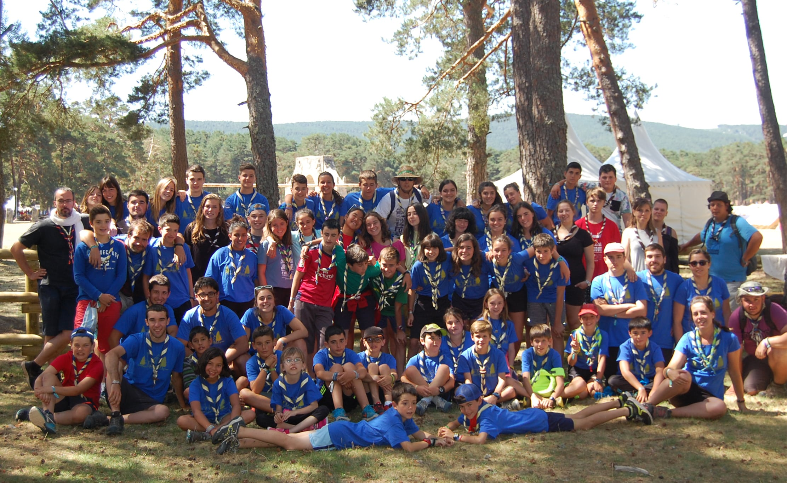

El Grupo Scout Ibaialde nació en el año 1984 en el colegio de los padres Escolapios de Tafalla y, desde el año 2014, está integrado en las parroquias de Santa María y San Pedro de Tafalla.
El Grupo toma su nombre del euskera “ibai” (río) y “alde” (al lado), por el río Cidacos que cruza la ciudad. Los colores de Ibaialde, reflejados en su pañoleta, son así el azul (del citado río) y el amarillo (por el sol que se refleja en él).
Habitualmente, desarrollan sus actividades los sábados por la tarde con los chavales más pequeños, de 16:00h a 18:00h.
Puedes encontrarnos en la parroquia de San Pedro de Tafalla (C. San Pedro, 14) o preguntando por nosotros en la parroquia de Santa Maria de Tafalla (C. Primicia, 2).
También puedes contactarnos llamando al teléfono de la parroquia, el 948 700 249, o a través del correo scoutibaialde